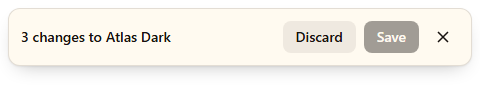

Loading…
Agent-First Design / Specimen
Agent-First Design: designing for the person who asks and the agent that acts. The second half of Agent-First Development, which is about software agents can use, not agents writing code.
Preview, on npmSpecimen
A test bench for components.
It shows what really rendered.
Specimen renders each state of a component in a real browser and keeps what it finds: sizes, colours, states and what a screen reader is told. Use it to compare two versions, and to brief an agent on every component.
What you see

What a screen reader is told
- button "Discard" [disabled] - button "Save" [disabled] - button "Dismiss" [disabled]
What that shows 1 button is disabled. 3 are announced as disabled.
- Measured, not eyeballed
- Every size, colour and state is read from the browser, so a review starts from facts.
- Every theme and size
- The same state in light, dark and high contrast, at any screen size, each in a fresh browser.
- A brief for agents
- It writes down what each component is for, and labels every fact by where it came from.
Fig. 01The idea
Five readings,
Five readings,
all from the browser.
A screenshot is a picture of a component. A capture is what the browser knows about it, written down. These are the five things Specimen reads, each with a value from the Save button in the bar above.
-
Markup
The elements and their attributes, inside shadow roots too.
<button class="keep" type="button">Save</button> -
Layout
Where each element sits and how big it is, to a fraction of a pixel.
55.38 × 32 at 363.63, 21 -
Styles
63 computed properties for every element: spacing, type, colour, borders.
padding 5px 12px · rgb(23, 18, 15) -
State
What a control is doing right now: disabled, checked, focused, its value.
disabled false · focused false -
Accessibility
The role and name the browser gives each element, as a screen reader gets them.
button "Save"
Fig. 02The comparison
Change one thing.
Change one thing.
See what it moved.
Try itPick a change. Both pictures are captures from a real browser, and the comparison runs on this page when you pick.
Fig. 03In one line
“Looking the same is not being the same.”
Two of the changes above leave every pixel where it was. Both change what a screen reader says.
Fig. 04The catch
It found one
It found one
in our own.
We wrote the bar on this page for this page. Its first version switched off Save
with a disabled attribute on the bar. It looked right. The capture
showed all three buttons announced as disabled, because Chromium reports that
attribute for every control inside the element that carries it.

The two pictures are the same. The fix was one attribute name, and the second capture is how we know it worked. The lesson did not stay in our heads: it is now a line in the bar's brief.
Fig. 05The brief
A brief for the agent.
A brief for the agent.
Every fact shows its source.
An agent asked to use a component needs to know what it is for and how to use it well. Specimen writes that down from the same runs, as one small file for each component. This is the one it built for the bar, lesson included.
Reading the brief…
Pick a word to see only those facts. An agent reading this knows which lines were proven and which are someone's advice.
Built by specimen pack. Open the file an agent reads
Fig. 06The themes
Is every screen covered?
Is every screen covered?
In all three themes.
Specimen renders each screen in light, dark and high contrast and compares the three pictures. A screen that looks the same in all three is not always a mistake: a receipt should stay white. So the rule is simple. If it does not change, the project has to say why.
Below, each picture sits on the page colour of its theme. Two of these screens stay white on a dark page. Only one of them is meant to.
Fig. 07The stories
Already on Storybook?
Already on Storybook?
Keep your stories.
Specimen runs stories written for Storybook as they are: the same files, the same interactions, the same accessibility checks. Storybook does not have to be installed, and nothing has to be rewritten to try it.
-
Step 1
Point it at your stories
A short configuration names your story files and the preview file you already have.
-
Step 2
Run both, side by side
Your stories keep running in Storybook while you compare. A story that needs something Specimen lacks fails loudly. It is never quietly skipped.
-
Step 3
Switch when they agree
A codemod changes the imports and shows you every change before it writes. A built review page takes over from Storybook's browser.
- 407
- stories in AFD's own component library made the move.
- 0
- disagreements with Storybook, over three full runs of all of them.
Fig. 08The proof
Shown is not proven.
Shown is not proven.
Specimen keeps them apart.
A story called Disabled proves nothing if nothing in it is disabled. Specimen lists every state a component can be in, then grades each one by what a run really saw.
-
Verified
A check ran against this element, in this state, and held.
Counts as covered -
Asserted
The component was in the state and a check held, but the check was about something else.
Does not count -
Represented
Something shows the component in this state. Nothing checked it.
Does not count -
Missing
Nothing shows it at all.
Does not count -
Unknown
The capture could not tell. It is never rounded up to covered.
Does not count
Written guidance is graded the same way. Each line about how to use a component, or what it needs to be accessible, is marked verified once a check proves it and authored until then. An agent reading the guidance can tell which is which.
Fig. 09The work
Where it
Where it
earns its place.
-
In a review
Build one page with every state on it. Pick a phone, a laptop or a custom size, switch the theme, and share the link.
specimen build ./review -
In a pull request
Capture before and after, and read the difference instead of comparing two pictures by eye.
specimen diff before.json after.json -
In CI
Stop the build when a screen ignores the theme, or when an accessibility check finds a problem.
specimen themes -
With your stories
It runs stories written for Storybook, with their interactions, without Storybook installed.
specimen run -
For an agent
A component pack tells an agent what each component is for and how to use it, with every fact labelled by where it came from.
specimen pack
Start with one component.
Point Specimen at a component and a few of its states. A first capture takes a short configuration file and one command.
npm install --save-dev @lushly-dev/specimen-cli@preview
Status
Preview. Specimen is on npm under the preview tag
and can still change. It runs in Chromium only. A comparison reads structure, not
pixels, so it does not say two versions look identical. The theme audit is the
part that compares pictures.